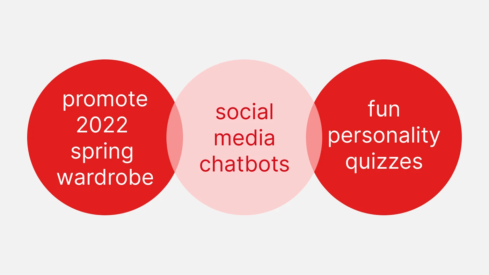
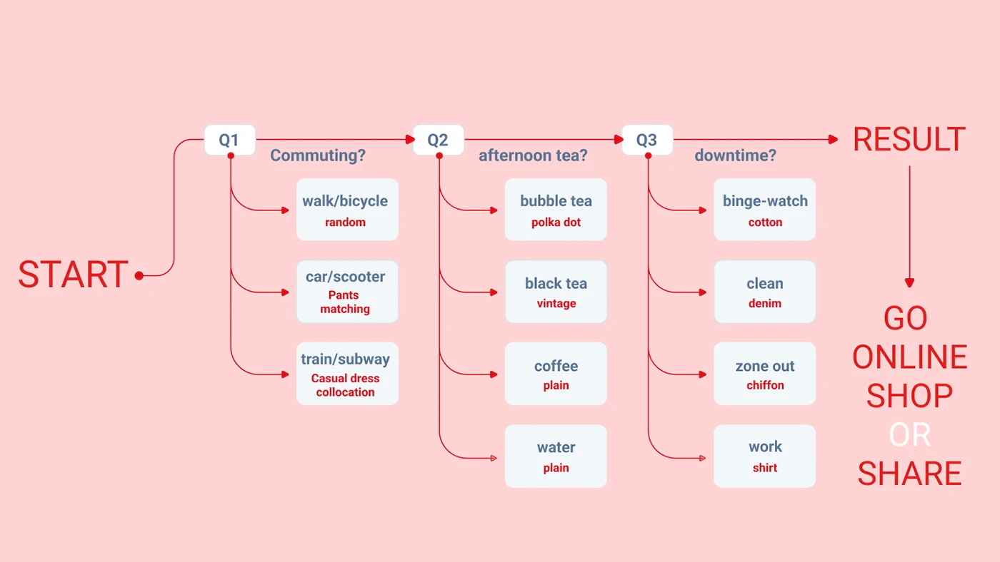
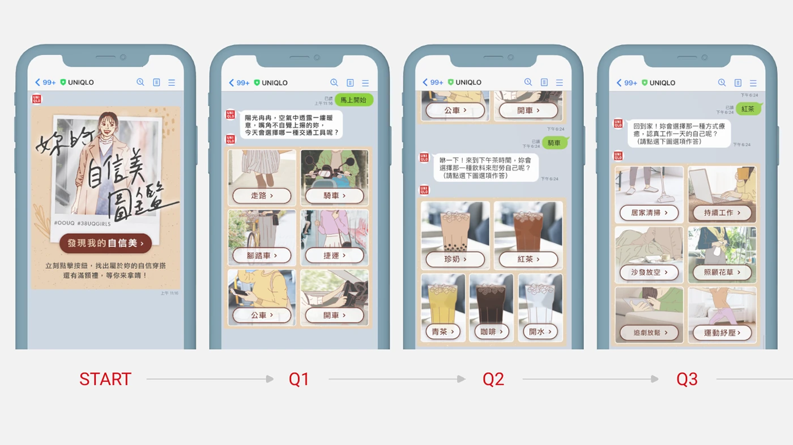
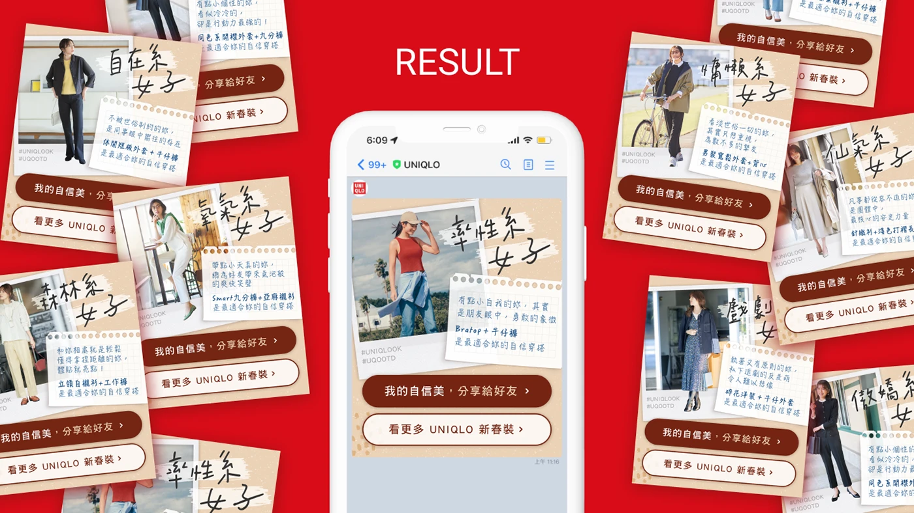

Case Study — 03
A 2022 spring campaign for UNIQLO women's wear — a chatbot personality quiz that turns social browsing into personalized outfit recommendations.
01 — Concept
Rather than pushing product shots into the feed, the campaign invites users into a conversation. A social chatbot runs a personality quiz; each answer builds a personal style profile, and the result pairs the user with curated UNIQLO spring looks — so the recommendation feels earned rather than advertised.


02 — Execution
I designed the quiz interface and produced the full illustration set — hand-lettered titles and warm, editorial character art that soften the retail context and give the chatbot a distinct personality across LINE and Instagram.

